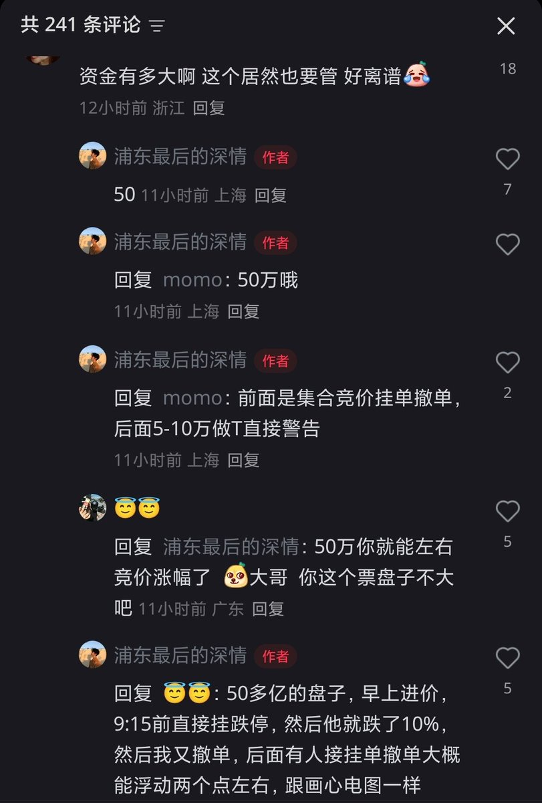
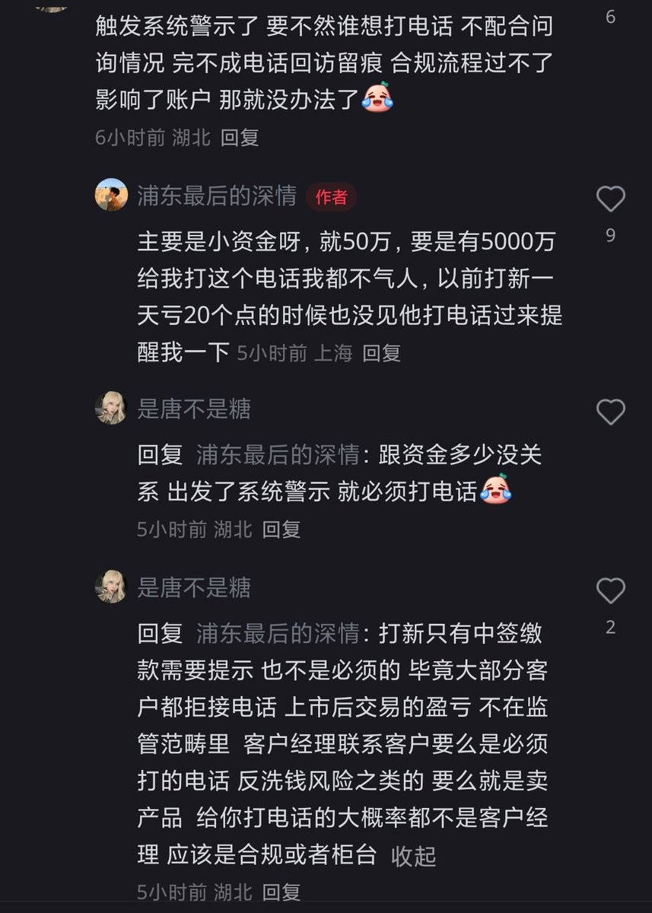

为什么A股散户那么可怜啊，xhs用户「浦东最后的深情」前面集合竞价挂单撤单，后面5-10万做T直接被caixin客服打电话警告
不过在竞价交易期间，频繁撤单会造成市场情绪误导触发风控，就算是大游资也不敢这样搞。但小散户不懂规则，好多东西明明之前从来没人说，然后就突然跳出来说你违规，如果不配合他们真有权限冻账户，那能玩的美股、港股又不让玩
这也是境内券商的难受之处，一旦触发监管风控系统提醒了，就必须有电话回访录音，换券商解决不了问题，触发监管风控哪个券商都要打电话。听起来A股的规则就是只能亏不能赚，当然不知道你资金有多大，可能大到影响他们赚钱了
不过在竞价交易期间，频繁撤单会造成市场情绪误导触发风控，就算是大游资也不敢这样搞。但小散户不懂规则，好多东西明明之前从来没人说，然后就突然跳出来说你违规，如果不配合他们真有权限冻账户，那能玩的美股、港股又不让玩
这也是境内券商的难受之处，一旦触发监管风控系统提醒了，就必须有电话回访录音，换券商解决不了问题，触发监管风控哪个券商都要打电话。听起来A股的规则就是只能亏不能赚，当然不知道你资金有多大，可能大到影响他们赚钱了

